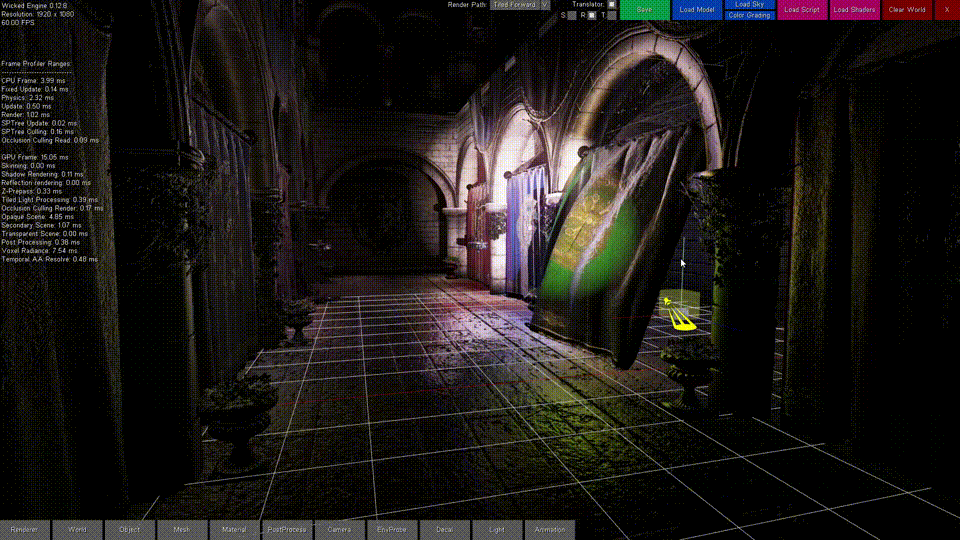
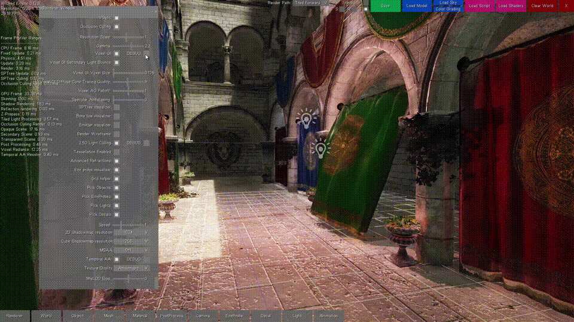
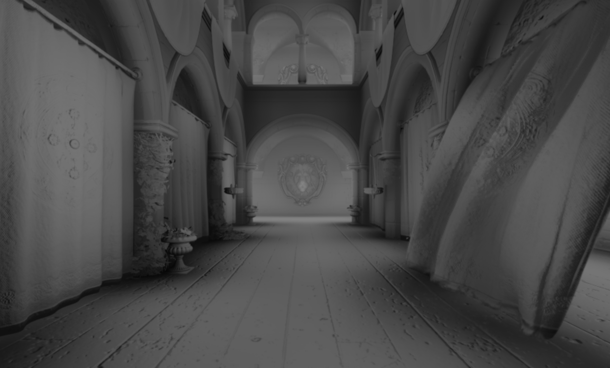
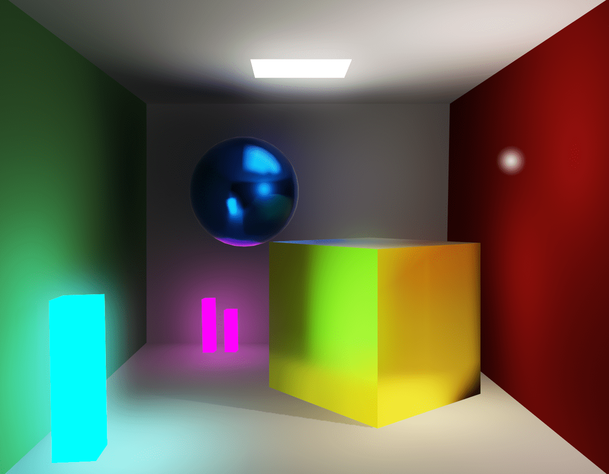
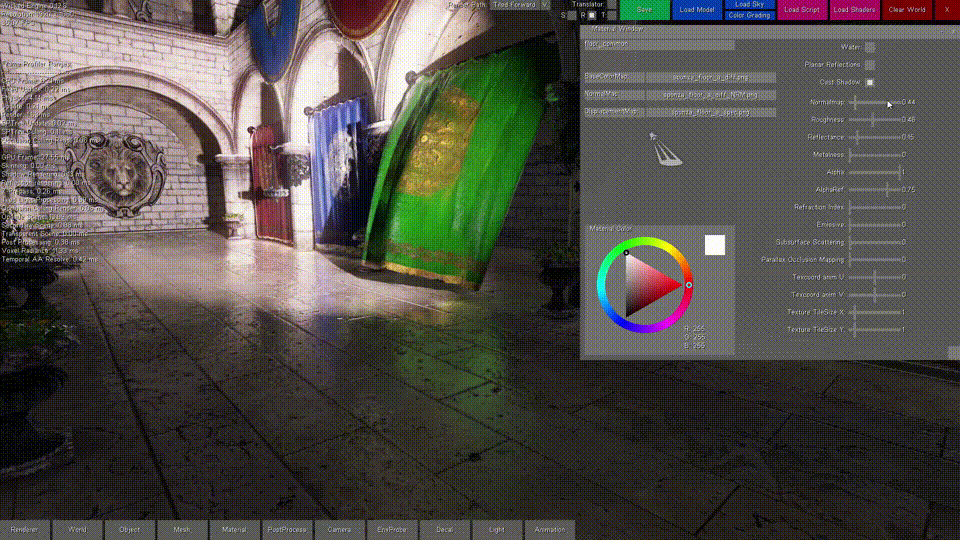

Voxel-based Global Illumination

There are several use cases of a voxel data structure. One interesting application is using it to calculate global illumination. There are a couple of techniques for that, too. I have chosen the voxel cone tracing approach, because I found it the most flexible one for dynamic scenes, but CryEngine for example, uses Light propagation volumes instead with a sparse voxel octree which has smaller memory footprint. The cone tracing technique works best with a regular voxel grid because we perform ray-marching against the data like with screen space reflections for example. A regular voxel grid consumes more memory, but it is faster to create (voxelize), and more cache efficient to traverse (ray-march).
So let’s break down this technique into pieces. I have to disclose this at the beginnning: We can do everything in this technique real time if we do everything on the GPU. First, we have our scene model with polygonal meshes. We need to convert it to a voxel representation. The voxel structure is a 3D texture which holds the direct illumination of the voxelized geometries in each pixel. There is an optional step here which I describe later. Once we have this, we can pre-integrate it by creating a mipmap chain for the resource. This is essential for cone tracing because we want to ray-march the texture with quadrilinear interpolation (sampling a 3D texture with min-mag-mip-linear filtering). We can then retrieve the bounced direct illumination in a final screen space cone tracing pass. The additional step in the middle is relevant if we want more bounces, because we can dispatch additional cone tracing compute shader passes for the whole structure (not in screen space).
The nice thing about this technique is that we can retrieve all sorts of effects. We have “free” ambient occlusion by default when doing this cone tracing, light bouncing, but we can retrieve reflections, refractions and shadows as well from this voxel structure with additional ray march steps. We can have a configurable amount of light bounces. Cone tracing code can be shared between the bouncing and querying shader and different types of rays as well. The entire thing remains fully on the GPU, the CPU is only responsible for command buffer generation.
Following this, I will describe the above steps in more detail. I will be using the DirectX 11 graphics API, but any modern API will probably do the job. You will definetly need a recent GPU for the most efficient implementation. This technique is targeted for PCs or the most recent consoles (Playstation 4 or Xbox One). It most likely can not run on mobile or handheld devices because of their limited hardware.
I think this is an advanced topic and I’d like to aim for experienced graphics programmers, so I won’t present code samples for the more trivial parts, but the whole implementation is available to anyone in Wicked Engine.
Part 1: Voxelization on the GPU
The most involving part is definetly the first one, the voxelization step. It involves making use of advanced graphics API features like geometry shaders, abandoning the output merger and writing into resources “by hand”. We can also make use of new hardware features like conservative rasterization and rasterizer ordered views, but we will implement them in the shaders as well.
The main trick is to be able to run this real time is that we need to parallelize the process well. For that, we will exploit the fixed function rasterization hardware, and we will get a pixel shader invocation for each voxel which will be rendered. We also do only a single render pass for every object.
We need to integrate the following pipeline to our scene rendering algorithm:
1.) Vertex shader
The voxelizing vertex shader needs to transform vertices into world space and pass through the attributes to the geometry shader stage. Or just do a pass through and transform to world space in the GS, doesn’t matter.
2.) Geometry shader
This will be responsible to select the best facing axis of each triangle received from the vertex shader. This is important because we want to voxelize each triangle once, on the axis it is best visible, otherwise we would get seams and bad looking results.
// select the greatest component of the face normal input[3] is the input array of three vertices
float3 facenormal = abs(input[0].nor + input[1].nor + input[2].nor);
uint maxi = facenormal[1] > facenormal[0] ? 1 : 0;
maxi = facenormal[2] > facenormal[maxi] ? 2 : maxi;After we determined the dominant axis, we need to project to it orthogonally by swizzling the position’s xyz components, then setting the z component to 1 and scaling it to clip space.
for (uint i = 0; i < 3; ++i)
{
// voxel space pos:
output[i].pos = float4((input[i].pos.xyz - g_xWorld_VoxelRadianceDataCenter) / g_xWorld_VoxelRadianceDataSize, 1);
// Project onto dominant axis:
if (maxi == 0)
{
output[i].pos.xyz = output[i].pos.zyx;
}
else if (maxi == 1)
{
output[i].pos.xyz = output[i].pos.xzy;
}
// projected pos:
output[i].pos.xy /= g_xWorld_VoxelRadianceDataRes;
output[i].pos.z = 1;
output[i].N = input[i].nor;
output[i].tex = input[i].tex;
output[i].P = input[i].pos.xyz;
output[i].instanceColor = input[i].instanceColor;
}At the end, we could also expand our triangle a bit to be more conservative to avoid gaps. We could also just be setting a conservative rasterizer state if we have hardware support for it and avoid the expansion here.
// Conservative Rasterization setup:
float2 side0N = normalize(output[1].pos.xy - output[0].pos.xy);
float2 side1N = normalize(output[2].pos.xy - output[1].pos.xy);
float2 side2N = normalize(output[0].pos.xy - output[2].pos.xy);
const float texelSize = 1.0f / g_xWorld_VoxelRadianceDataRes;
output[0].pos.xy += normalize(-side0N + side2N)*texelSize;
output[1].pos.xy += normalize(side0N - side1N)*texelSize;
output[2].pos.xy += normalize(side1N - side2N)*texelSize;It is important to pass the vertices’ world position to the pixel shader, because we will use that directly to index into our voxel grid daa structure and write into it. We will also need texture coords and normals for correct diffuse color and lighting.
3.) Pixel shader
After the geometry shader, the rasterizer unit scheduled some pixel shader invocations for our voxels, so in the pixel shader we determine the color of the voxel and write it into our data structure. We probably need to sample our base texture of the surface and evaluate direct lighting which affects the fragment (the voxel). While evaluating the lighting, use a forward rendering approach, so iterate through the nearby lights for the fragment and do the light calculations for the diffuse part of the light. Leave the specular out of it, because we don’t care about the view dependant part now, we want to be able to query lighting from any direction anyway later. I recommend using a simplified lighting model, but try to keep it somewhat consistent with your main lighting model which is probably a physically based model (at least it is for me and you should also have one :P) and account for the energy loss caused by leaving out the specularity.
When you calculated the color of the voxel, write it out by using the following trick: I didn’t bind a render target for the render pass, but I have set an Unordered Access View by calling OMSetRenderTargetsAndUnorderedAccessViews(). So the shader returns nothing, but we write into our voxel grid in the shader code. My voxel grid is a RWStructuredBuffer here to be able to support atomic operations easily, but later it will be converted to a 3D texture for easier filtering and better cache utilization. The Structured buffer is a linear array of VoxelType of size gridDimensions X*Y*Z. VoxelType is a structure holding a 32 bit uint for the voxel color (packed HDR color with 0-255 RGB, an emissive multiplier in 7 bits and the last bit indicates if the voxel is empty or not). The structure also contains a normal vector packed into a uint. Our interpolated 3D world position comes in handy when determining the write position into the buffer, just truncate and flatten the interpolated world position which you reveived from the geometry shader. For writing the results, you must use atomic max operations on the voxel uints. You could be writing to a texture here without atomic operations, but using rasterizer ordered views, bt they don’t support volume resources, so a multi pass approach would be necessary for the individual slices of the texture.
An additional note: If you have generated shadow maps, you can use them in your lighting calculations here to get more proper illumination when cone tracing. If you don’t have shadow maps, you can even use the voxel grid to retrieve (soft) shadow information for the scene later.

If you got so far, you just voxelized the scene. You should write a debugger to visualize the results. I am using a naive approach which is maybe a bit slow, but gets the job done. I issue a Draw() command with a vertex count of voxel grid dimensions X*Y*Z, read my voxel grid in the vertex shader indexed by the SV_VertexID, then expand to a cube in the geometry shader if the voxel color is not empty (greater than zero). The pixel shader outputs the voxel color for each screen pixel covered.
Part 2: Filtering the data
We voxelized our scene into a linear array of voxels with nicely packed data. The packed data helped in the voxelization process, but it is no good for cone tracing, we need a texture which we can filter and sample. I have a compute shader which unpacks the voxel data, copies it into a 3D texture with RGBA16 format for HDR colors and finally it also clears the packed voxel data by filling it with zeroes. A nice effect would be not just writing the target texture, but intepolating with old values so that abrupt changes in lighting, or moving objects don’t cause much flickering. But we have to account for moving camera and offsetting the voxel grid. We could lerp intelligently with a nice algorithm, but I found that the easiest method is just “do not lerp when the voxel grid got offset” was good enough for me.
Then we generate a mip chain for the 3D texture. DX11 can do this automatically for us by calling GenerateMips() on the device context, but we can also do it in shaders if we want better quality than the default box filter. I experimented with gaussian filtering, but I couldn’t write one to be fast enough to be worthwhile, so I am using the default filter.
But what about the normals, because we saved them in the voxelization process? They are only needed when doing multiple light bounces or in more advanced voxel algorithms, like anisotropic voxelization.

Part 3: Cone tracing
We have the voxel scene ready for our needs, so let’s query it for information. To gather the global illumination for the scene, we have to run the cone tracing in screen space for every pixel on the screen once. This can happen in the forward rendering object shaders or against the gbuffer in a deferred renderer, when rendering a full screen quad, or in a compute shader. In forward rendering, we may lose some performance because of the worse thread utilization if we have many small triangles. A Z-prepass is an absolute must have if we are doing this in forward rendering. We don’t want to shade a pixel multiple times because this is a heavy computation.
For diffuse light bounces, we need the pixel’s surface normal and world position at minimum. From the world position, calculate the voxel grid coordinate, then shoot rays in the direction of the normal and around the normal in a hemisphere. But the ray should not start at the surface voxel, but the next voxel along the ray, so we don’t accumulate the current surface’s lighting. Begin ray marching, and each step sample your voxel from increasing mip levels, accumulate color and alpha and when alpha reaches 1, exit and divide the distance travelled. Do this for each ray, and in the end divide the accumulated result with the number of rays as well. Now you have light bounce information and ambient occlusion information as well, just add it to your diffuse light buffer.
Assembling the hemisphere: You can create a hemisphere on a surface by using a static array of precomputed randomized positions on a sphere and the surface normal. First, if you do a reflect(surfaceNormal, randomPointOnSphere), you get a random point on a sphere with variance added by the normal vector. This helps with banding as discrete precomputed points get modulated by surface normal. We still have a sphere, but we want the upper half of it, so check if a point goes below the “horizon” and force it to go to the other direction if it does:
bool belowHorizon = dot(surfaceNormal, randomPointOnSphere) < 0;
coneDirection = belowHorizon ? - coneDirection : coneDirection;Avoid self-occlusion: So far, the method of my choice to avoid self occlusion is to start the cone tracing with offset from the surface by the normal direction and also the cone direction. If I don’t do this, then the cone starts off the surface and immediately samples its own voxel, so each surface would get its own contribution from the GI, which is not good. But if we start further off, then that means close by surfaces will not contribute to each other’s GI and there will be a visible disconnect in lighting. I imagine it would help to use anisotropic voxels, which means store a unique voxel for a few directions and only sample the voxels facing the opposite direction to the cone. This of course would require much additional memory to store.
Accumulating alpha: The correct way to accumulate alpha is a bit different to regular alpha blending:
float4 color = 0, alpha = 0;
// ...
// And inside cone tracing loop:
float4 voxel = SampleVoxels().rgba;
float4 a = 1 - alpha;
color += a * voxel.rgb;
alpha += a * voxel.a;As you can see, this is more like a front-to back blending. This is important, because otherwise we would receive a black staircase artefact on the edge of voxels, where the unfilled (black) regions with zero alpha would bleed into the result very aggressively.
Stepping the cone: When we step along the ray in voxel-size increments (ray-marching) in world space, we can retrieve the diameter of the cone for a given position by calculating this:
float coneDiameter = 2 * tan(coneHalfAngle) * distanceFromConeOrigin;Then we can retrieve the correct mip level to sample from the 3D texture by doing:
float mip = log2(coneDiameter / voxelSize);With this, we have a single light bounce for our scene. But much better results can be achieved with at least a single secondary light bounce. Read on for that.

Part 4: Additional light bounces
This is a simple step if you are familiar with compute shaders and you have wrapped the cone tracing function to be reusable. When we filtered our voxel grid, we spawn a thread in a compute shader for each voxel (better just for the non-empty voxels), unpack its normal vector and do the cone tracing like in the previous step, but instead for each pixel on the screen, we need to do it for each voxel. This needs to write into an additional 3D texture by the way, because we are sampling the filtered one in this pass, so mind the additional memory footprint.
Part 5: Cone traced reflections
To trace reflections with cone tracing, use the same technique, but the steps along mip levels should take the surface roughness into account. For rough surfaces, the cone should approach the diffuse cone tracing size, for smooth surfaces, keep the mip level increasing to minimum. Just experiment with it until you get results which you like. Or go physically based, and it will be much cooler and would probably go for a nice paper.
Maybe the voxel grid resolution which is used for the diffuse GI is not fine enough for reflections. You will probably want to use a finer voxelization for them. Maybe using separate voxel data for diffuse and specular reflections is a good idea, with some update frequency optimizations. You could, for example update the diffuse voxels in even frames and specular voxels in odd frames orsomething like that.
You probably want this as a fallback to screen space reflections, if they are available.

Part 6: Consider optimizations
The technique, at the current stage, will only work on very fast GPUs. But there already are some games using tech like this (Rise of Tomb Raider using voxel AO), or parts of it, even on consoles (The Tomorrow Children). This is possible with some aggressive optimization techniques. Sparse Voxel Octrees can reduce memory requirements, voxel cascades can bring up framerates with clever updating frequency changes. And of course do not re-voxelize anything that is not necessary, eg. static objects (however, it can be difficult to separate them, because dynamic lights should also force re-voxelization of static objects if they intersect).
And as always, you can see my source code at my GitHub! Points of interest:
Thank you for reading!
- You can read more about voxelization and how to avoid artifacts in this article: https://developer.nvidia.com/content/basics-gpu-voxelization
- See how they achieved a similar technique in a Playstation 4 game, The Tomorrow Children: http://fumufumu.q-games.com/archives/Cascaded_Voxel_Cone_Tracing_final.pdf
- You can read about the CryEngine method, which uses light propagation volumes: http://www.crytek.com/cryengine/presentations/real-time-diffuse-global-illumination-in-cryengine-3
- You can take a look at my implementation in Wicked Engine: https://github.com/turanszkij/WickedEngine